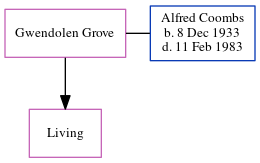

Annie Elizabeth Moore (née Stapley) 1891 - c1970
[ Home ] | [ Calendar ] | [ Surnames Index ] | [ Errors ] | [ Family History ]Annie Stapley, the wife of Albert Edwin George Moore (the second cousin twice-removed on the mother's side of Nigel Horne), was born in Tunbridge Wells, Kent, England on 12 Oct 18911,2,3 and baptised there at St James on 12 May 1895. She married Albert (a compositor) at St Stephen's Church, 37 Waterloo Road, Tonbridge, Kent, England on 5 May 19154. On 29 Sept 1939, she was living at 18A Avebury Avenue in Tonbridge1.
She died c. Feb 1970 in Tonbridge3.
Citations
- 1939 Register - Findmypast (was the wife of the head of the household)
- England & Wales births 1837-2006 - Findmypast
- England & Wales deaths 1837-2007 - Findmypast
- England & Wales Marriages 1837-2005 - Findmypast
Media
England & Wales deaths 1837-2007 - BMD/D/1970/1/AZ/000955/083
England & Wales births 1837-2006 - BMD/B/1891/4/AZ/000531/004
Kent marriages and banns - PRS/KENT/MAR/0190538/2
England & Wales marriages 1837-2005 - BMD/M/1915/1/AZ/000850/059
Kent Baptisms - PRS/KENT/BAP/0801789
1939 Register - TNA/R39/1796/1796B/003/40
Family Tree
Map
Generated by ged2site. Last updated on Jul 3, 2024
Known Issues
Baptism information not used to determine a parent
No records of living with anyone